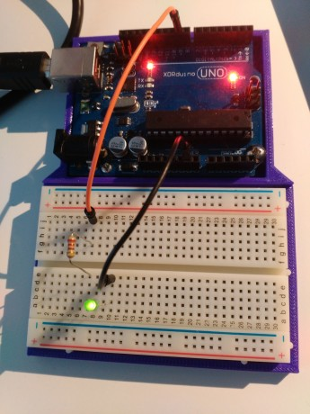
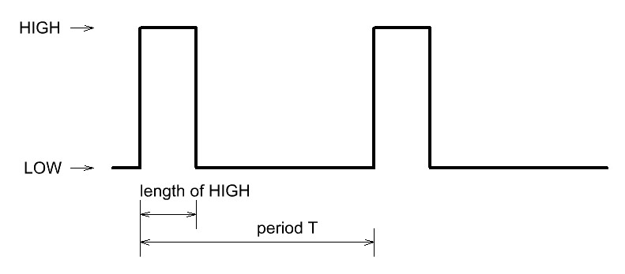

LED’s brightness can be controlled with Pulse Width Modulation or PWM. Arduino only have so many PWM ports. Did you ever wonder how to control the LED on any Arduino Pin? Here is how you can make it.
Let me talk first about PWM. PWM signal is digital signal modulation with HIGH and LOW states. It is basically a square wave with constant frequency f and with variable duty cycle d. Duty cycle is ratio between period T of the signal (1/f) and length of the HIGH state. For example: if period of the signal is 20 ms and length of the HIGH state is 5 ms, duty cycle would be d = 5/20 = 0.25 or 25%
By setting the duty cycle we can affect the lit time of the LED and by using frequencies that our eye cannot distinguish (usually higher than 40 Hz) for refresh rate, we get a feeling LED isn’t blinking. If for example duty cycle is set to 25% that means LED is lit 25% of the time. Our eye will see LED dimmed at about 25%. If duty cycle is set to 75% LED will be brighter and with duty cycle at 100% LED would be the brightest. When using analogWrite() function, this is easy. But How to do the same on pins that does not have option for PWM?
As said before, we need signal with constant frequency/period. The best way to set duty cycle is to divide period into several smaller steps. These steps count as different duty cycles. If there are 20 steps in one period, this means that we can set our PWM with 5% resolution.

Flow chart is showing, how software PWM should look like. If we want 50% duty cycle, first 10 steps in the period output would be HIGH and the last 10 steps in the period output should be LOW. Here a few examples:
I think you get the idea. This code can be used to implement dimming or raising the brightness of the LED, like in the example bellow, or controlling single LED. I would not recommend using this code with any other longer bits of the code, because results may not be as predicted.